01 · CIRCUITS
Transformer circuits
Information does not simply pass through a model—it is routed, rewritten, amplified, and combined along a computational circuit.
AI RESEARCH · NOTES IN PROGRESS
I’m Yingjie Tan. I study the mechanisms that let language models retrieve, route, compress, and transform information—and how to make those mechanisms more interpretable and efficient.

01
The themes that organize my experiments, essays, and reading notes.
A
Which representations and computational paths actually control a model’s answer?
B
What gets selected, what gets missed, and why can reasoning still succeed?
C
How can long trajectories and KV caches be compressed without losing evidence?
02
Five animated maps of the systems and questions that shape my work.

Information does not simply pass through a model—it is routed, rewritten, amplified, and combined along a computational circuit.

At every layer, an index head chooses a small token set; the main head then performs focused reasoning over that routed evidence.

KV-cache compression asks what can be discarded, what must remain addressable, and whether useful abstraction is itself a form of intelligence.

A useful head behaves like a telescope: it scans a wide memory field, resolves a few distant signals, and brings the right evidence into focus.

Interpretability becomes actionable when an observed representation can be intervened on and connected to a measurable change in behavior.
03